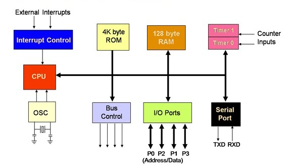
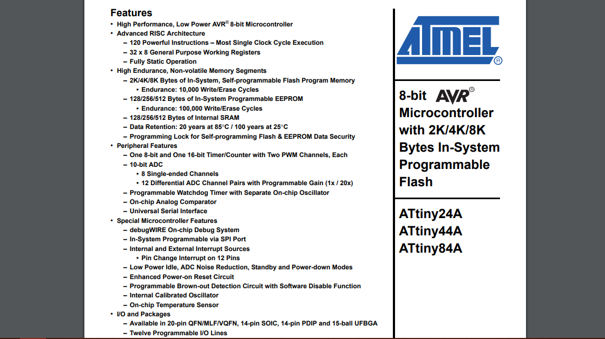
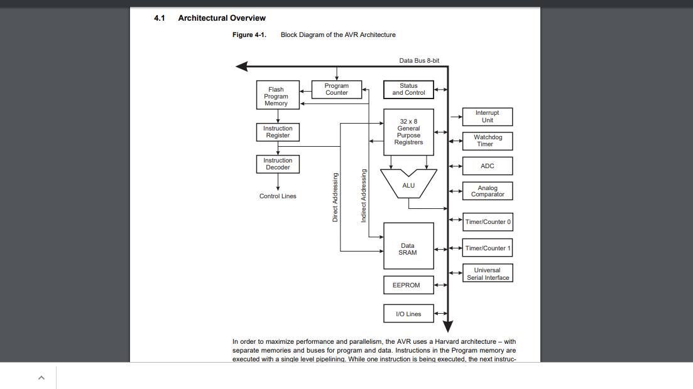
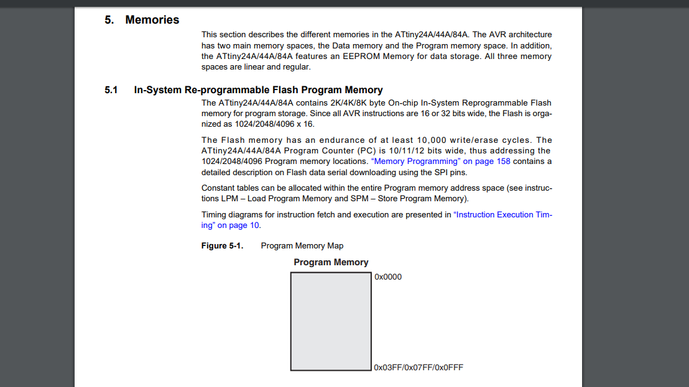
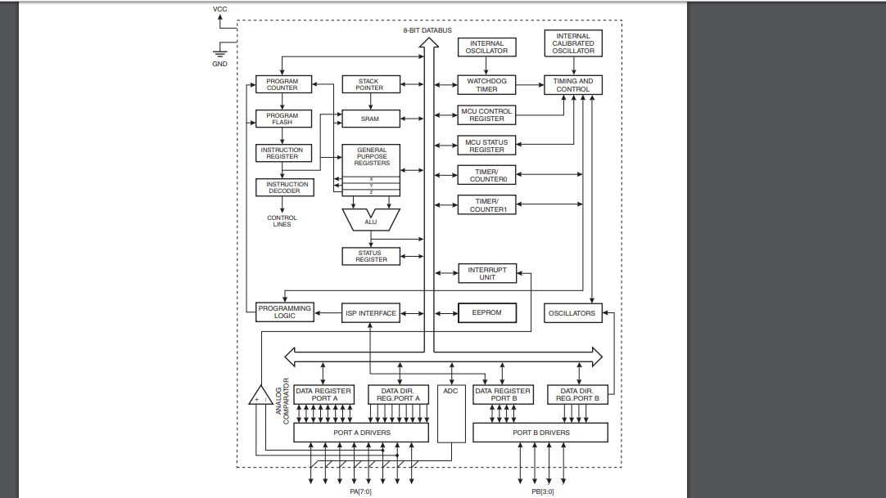
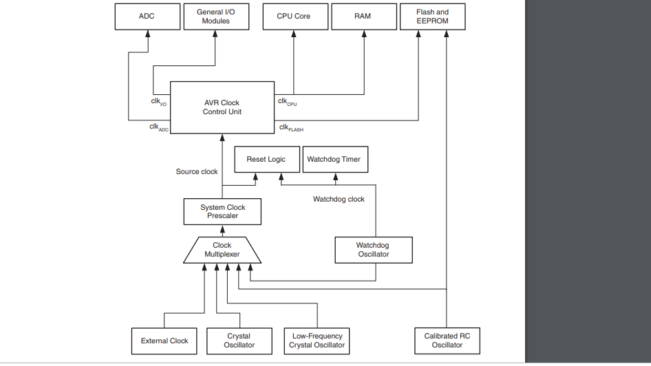

Original files
Week 9 : Assignment
- Study Datasheet of microcontroller
- Program board with as many langauge as possible
this week we are going to learn about microcontrollers and embedded programming , our assignment was to understand the microcontroller by reading its Datasheet, to know different terms in micro controller and use them effectively in future to make own board in future as well. i want to start with very bottom , since i had some imformation about Electrical components in week 5. i started with the terms like integrated circuits and microcontroller.
Integrated circuit
An integrated circuit (IC), sometimes called a chip or microchip, is a semiconductor wafer on which thousands or millions of tiny resistors, capacitors, and transistors are fabricated. An IC can function as an amplifier, oscillator, timer, counter, computer memory, or microprocessor. A particular IC is categorized as either linear (analog) or digital, depending on its intended application.
There are two types of IC. Linear IC and Digital IC.
Linear IC
Linear ICs have continuously variable output (theoretically capable of attaining an infinite number of states) that depends on the input signal level. As the term implies, the output signal level is a linear function of the input signal
level. Ideally, when the instantaneous output is graphed against the instantaneous input, the plot appears as a straight line. Linear ICs are used as audio-frequency (AF) and radio-frequency (RF) amplifiers. The operational amplifier(op
amp)
is a common device in these applications.
Digital IC
Digital ICs operate at only a few defined levels or states, rather than over a continuous range of signal amplitudes. These devices are used in computers, computer networks, modems, and frequency counters. The fundamental building blocks of digital ICs are logic gates, which work with binary data, that is, signals that have only two different states, called low (logic 0) and high (logic 1).
What is microcontroller ?
It’s like a small computer on a single IC. It contains a processor core, ROM, RAM and I/O pins dedicated to perform various tasks. Microcontrollers are generally used in projects and applications that require direct control of user. As it has all the components needed in its single chip, it does not need any external circuits to do its task so microcontrollers are heavily used in embedded systems and major microcontroller manufacturing companies are making them to be used in embedded market. A microcontroller can be called the heart of embedded system. Some examples of popular microcontrollers are 8051, AVR, PIC series of microcontrollers.
Above is architecture of 8051 microcontroller. And you can see all the required components for a small project is present in a single chip.
Wiki definition
A Microcontroller (MCU for microcontroller unit, or UC for μ-controller) is a small computer on a single integrated circuit. In modern terminology, it is similar to, but less sophisticated than, a system on a chip (SoC); an SoC may include
a
microcontroller as one of its components. A microcontroller contains one or more CPUs (processor cores) along with memory and programmable input/output peripherals. Program memory in the form of ferroelectric RAM, NOR flash or OTP ROM is
also
often included on chip, as well as a small amount of RAM. Microcontrollers are designed for embedded applications, in contrast to the microprocessors used in personal computers or other general purpose applications consisting of various
discrete chips.
Memory types
Ram
Random Access Memory (RAM) is a term commonly used to describe the memory within a computer. Unlike ROM, RAM is a volatile memory and requires power; if power is lost, all data is also lost.
Flash nor
Flash memory is an electronic (solid-state) non-volatile computer storage medium that can be electrically erased and reprogrammed.
OTP (One time programmable) ROM
A programmable read-only memory (PROM) is a form of digital memory where the setting of each bit is locked by a fuse or antifuse. It is one type of ROM (read-only memory). The data in them is permanent and cannot be changed. PROMs are used in digital electronic devices to store permanent data, usually low level programs such as firmware or microcode.
The key difference from a standard ROM is that the data is written into a ROM during manufacture, while with a PROM the data is programmed into them after manufacture.
Difference between Integrated Circuit and microcontroller
Microcontroller is a register based clock driven integrated circuit that read data from input, performs actions based on the instruction written in the memory and display the results at o/p. the biggest difference between microcontroller and normal IC is that it can be programmed through software instructions to perform different tasks. while an IC for e.g, IC for not gate performs just one function (of inverting the signal) and needs to be assembled on a bread board or PCB board everytime it is being used. It doesn't have any memory elements.
What is In Microprocessor ?
The Microprocessor is one type of simple electronic or computer devices which stores and process the data, not a desktop or computer hardware include one or few Integrated Circuits. It is similar to microcontroller, but does not have any peripheral devices like RAM, ROM, etc. The task of microprocessors is dependent on exterior circuits of peripherals. But there are not work for the specific task, but they are needed where the task is tough and complicated like games, software development, other applications that require high memory and also where I/O are not mentioned. The Microprocessor is called the heart of a computer system. For example, of the best Microprocessor are I3, Pentium, and I5 etc..

Terms
Bus (Computing)
In computer architecture, a bus (a contraction of the Latin omnibus) is a communication system that transfers data between components inside a computer, or between computers. This expression covers all related hardware components (wire,
optical fiber, etc.) and software, including communication protocols. Wiki
Microprocessor is processing device of every computing device. It is like an artificial brain. It needs to communicate with outer world. for example, It needs to communicate with Input devices to get data,it needs to communicate with
memory
to process data according to instructions written in memory and finally it needs to communicate with output devices to display the output on O/P devices. To communicate with external world, Microprocessor make use of buses. There are
different types of buses used in Microprocessor
Data bus
As name tells that it is used to transfer data within Microprocessor and Memory/Input or Output devices. It is bidirectional as Microprocessor requires to send or receive data. The data bus also works as address bus when multiplexed with
lower order address bus. Data bus is 8 Bits long. The word length of a processor depends on data bus, thats why Intel 8085 is called 8 bit Microprocessor because it have an 8 bit data bus.
Address bus
As name tells that it is used to transfer data within Microprocessor and Memory/Input or Output devices. It is bidirectional as Microprocessor requires to send or receive data. The data bus also works as address bus when multiplexed with
lower order address bus. Data bus is 8 Bits long. The word length of a processor depends on data bus, thats why Intel 8085 is called 8 bit Microprocessor because it have an 8 bit data bus.
Control Bus
Microprocessor uses control bus to process data, that is what to do
with the selected memory location. Some control signals are Read, Write and Opcode fetch etc. Various operations are performed by microprocessor with the help of control bus. This is a dedicated bus, because all timing signals are
generated
according to control signal.
An arithmetic logic unit (ALU) is a combinational digital electronic circuit that performs arithmetic and bitwise operations on integer binary numbers. This is in contrast to a floating-point unit (FPU), which operates on floating point numbers. An ALU is a fundamental building block of many types of computing circuits, including the central processing unit (CPU) of computers, FPUs, and graphics processing units (GPUs). A single CPU, FPU or GPU may contain multiple ALUs. Wiki
Datasheet
Important topics in the Datasheet
Features

Page is explaining about Key things about micro controller, it is 8-bit microcontroller means it can process 8 - bit of word size per second. An 8-bit controller works on 8-bits at a time hence suitable for low
power, less compute intensive application.
Data types matter in 8-bit. For example int var_1 allocates 2 bytes in AVR ( 8-bit micro) and char var_2 allocates 1 byte.
Since i tell you it shows the processing ability of the microcontroller it
also
effects the ALU (Arithmetic Control Unit). 8 bit microcontroller refers to the processing capability of ALU of a microcontroller.
Architectural overview

ATtiny44 has advance RISC architecture.
Reduced instruction set computer, or RISC (/rɪsk/), is one whose instruction set architecture (ISA) allows it to have fewer cycles per instruction (CPI) than a complex instruction set computer (CISC). Various suggestions have been made regarding a precise definition of RISC, but the general concept is that such a
computer has a small set of simple and general instructions, rather than a large set of complex and specialized instructions. Wiki.
Memory

Types of Memory in micro controller
In system re-programmable memory (Flash and EEROM)
The ATtiny24A/44A/84A contains 2K/4K/8K byte On-chip In-System Reprogrammable Flash
memory for program storage.The Flash memory has an endurance of at least 10,000 write/erase cycles.
It means one can program the isp for 10,000 time approximately. after that micro controller will not to be sure to
prorammed. As i explained in beginning flash memory no - volatile memory and it is the type of EEROM (electrically erasable read only memory) which has large storage space in comparison to EEROM. Though EERom has advantage in
programmable cycles , one can program 1,000,000 (cycles) times in EEROM type memory
flash memory differs in a way that EEROM has only one transistor per bit. but flash has 8 transistors per
bit so it is much faster in writing large data over AEEROM and used for store the firmware code and EEROM is used to track historuy and parameters.
Static rendom Access memory
Static random-access memory (static RAM or SRAM) is a type of semiconductor memory that uses bistable latching circuitry (flip-flop) to store each bit. SRAM exhibits data remanence, but it is still volatile in the conventional sense
that
data is eventually lost when the memory is not powered.
The term static differentiates SRAM from DRAM (dynamic random-access memory) which must be periodically refreshed. SRAM is faster and more expensive than DRAM; it is typically used for CPU cache while DRAM is used for a computer's main
memory. Wiki
Dynamic rendom access memory
Dynamic random-access memory (DRAM) is a type of random access semiconductor memory that stores each bit of data in a separate tiny capacitor within an integrated circuit. The capacitor can either be charged or discharged; these two
states are taken to represent the two values of a bit, conventionally called 0 and 1.
The electric charge on the capacitors slowly leaks off, so without intervention the data on the chip would soon be lost. To prevent this, DRAM requires an external memory refresh circuit which periodically rewrites the data in the
capacitors, restoring them to their original charge.
This refresh process is the defining characteristic of dynamic random-access memory, in contrast to static random-access memory (SRAM) which does not require data to be
refreshed.
Unlike flash memory, DRAM is volatile memory (vs. non-volatile memory), since it loses its data quickly when power is removed. However, DRAM does exhibit limited data remanence.
Block diagram
In learning first thing i noticed it everything is connected to one single line or path called 8- bit Bus. I am still not fulley aware of design here but i can say all the microcontroller controlling units means which
help
micro controller to synchronise on every clock signal are on right side of the 8 bit bus. On the left side of the bus Processing unit including Memmory portion, Register, Logic unit(ALU) is
placed.
i will write about this in clock signal part.But i can tell this clock works ccome to Timer counter
Here WATCHCHDOG TIMER create automatically system reset when it hangs if main program neglets to periodically service it.
INTERNAL Calibrated CLOCK ia internal clock of micro-controller in microcontroller ATtiny44 its maximum frequency is 8Mhz.
Clock
This section is trying to explain clock system of the ATTiny44. 
Clock signal or pulse is used in digital circuits of sequential circuits for differentiating output with time . As in sequential circuits output ks fed back to input and new output will be given after every clock pulse.
Applications flip flops, 555 timer etc
Clock is used in digital circuit for the following reasons:
Propagation delay In electronics, digital circuits and digital electronics, the propagation delay, or gate delay, is the length of time which starts when the input to a logic gate becomes stable and valid to change, to the time that the output of that logic gate is stable and valid to change.
Often on manufacturers' datasheets this refers to the time required for the output to reach 50% of its final output level when the input changes to 50% of its final input level. Reducing gate delays in digital circuits allows them to process data at a faster rate and improve overall performance. The determination of the propagation delay of a combined circuit requires identifying the longest path of propagation delays from input to output and by adding each tpd time along this path. Clock signal interval should always be more than the propogation delay.
Pin configuration

Graphical pinout

Graphical pinout helps to use the microcontroller more effectively , when you are using it with different development softweres you will need to gice then specific pin number where you want to have some output or some input also, here for Arduino Development environment (IDE) blue pins shown in picture is are arduino pins you can give specific inputs and output at pins in arduino IDE which we will see soon in board programming. In week 7 i already talk about Attiny 44 pinout and Some terms in Details.
Programming Board

I am going to program the echo hello board. there was a missing resister in echo hello in my design , i noticed it later , it was connected between vcc and reset pin , will not effect working anyway.
Programming in Arduino IDE
for programming Attiny 44 in arduino ide , one have to include board settings to the ide , one can do that by adding some perticular link in the Preference of file menu , see below !Arduino tiny core
you have to paste "http://drazzy.com/package_drazzy.com_index.json" on the additional board manager section

settings in tools
Give this settings , you can visit week 5 for settings

Burn the bootloader

Blinking the Led
For see the Micro controllers action on the LED i Decided to make one relation between Switch and the LED.


Code
Final code with the Switch. Since i put the Switch to the the PA3(Arduino pin 3) and LED to the PA2(Arduino pin 2)

in general i have written a code which tell the microcontroller to controll the led blinking when i am pushing the button. Code link. here i am giving
power throught the FTDI.
embedded programming work
one can fing other embedded programming work on week 11, week 12.Group work
In Embedded programming our group work was to Compare the performance and development workflows for other architectures. we had stm32f103c8 Blue pill Development Board.I generally know any other microcontrollers other that ATtiny and Atmega i was interested in Datasheet part !
Specifications
visit group website for more imformation.
Conclusion
In three electronics weeks this week was first when i was getting something in mind about terminologies , i got time to explore about microcontroller though. i programmed simple code which Arduino IDE but i also interested in learning other langauges too, in mean time i am going to try c programming to program my board.

Smart Bin by Dhruv Prakashbhai Patel is licensed under a Creative Commons Attribution-NonCommercial-ShareAlike 4.0 International License.